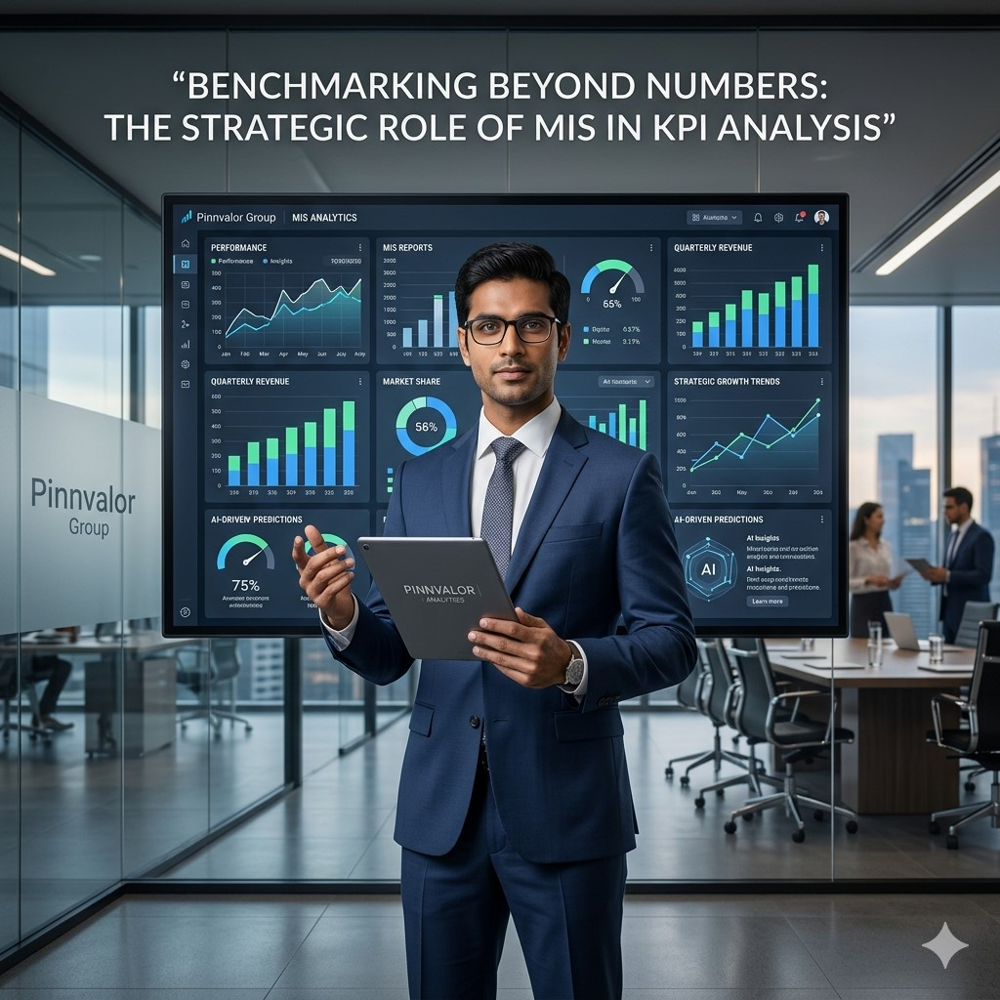

Benchmarking Beyond Numbers: The Strategic Role of MIS in KPI Analysis
In today’s highly competitive business environment, organizations are increasingly relying on data-driven decision-making to improve operational performance and strategic growth. At the center of this transformation lies the powerful integration of Management Information Systems (MIS) and Key Performance Indicator (KPI) benchmarking.
sAre your KPIs driving decisions, or are they simply filling dashboards with data?
KPI benchmarking is no longer about tracking numbers alone — it’s about uncovering the strategic intelligence hidden behind business performance. MIS transforms raw data into decisions that drive growth, efficiency, and competitive advantage.
Modern businesses no longer view KPI analysis as a simple reporting mechanism. Instead, organizations use MIS frameworks to transform performance data into actionable business intelligence that drives efficiency, profitability, accountability, and competitive advantage.
This article explores how MIS plays a strategic role in KPI benchmarking and why businesses must move beyond numbers to achieve sustainable growth and operational excellence.
Understanding KPI Benchmarking
KPI benchmarking is the process of comparing organizational performance metrics against predefined standards such as:
- Industry benchmarks
- Competitor performance
- Historical business data
- Internal targets and goals
- Operational efficiency standards
Businesses use KPI benchmarking to evaluate performance gaps, identify inefficiencies, and improve strategic decision-making.
Common KPIs include:
- Revenue growth rate
- Customer acquisition cost
- Inventory turnover ratio
- Employee productivity
- Operating profit margins
- Customer retention rate
- Cash conversion cycle
- Sales conversion performance
The Evolving Role of MIS in Business Performance Management
Traditional MIS systems were primarily used for static reporting and historical data analysis. However, modern MIS platforms now integrate:
- Real-time dashboards
- Cloud-based reporting systems
- AI-driven analytics
- Predictive forecasting tools
- Automated performance monitoring
- Cross-functional data integration
Today’s MIS systems serve as strategic intelligence platforms that enable organizations to analyze trends, forecast business risks, and improve operational efficiency.
Why MIS is Essential for Effective KPI Benchmarking
1. Centralized Data Management
One of the major challenges in KPI analysis is inconsistent and fragmented data across departments. MIS helps organizations centralize information from finance, HR, sales, operations, and customer management systems into a unified platform.
This enables:
- Consistent KPI calculations
- Reduced reporting errors
- Improved transparency
- Better audit trails
- Accurate performance comparisons
2. Real-Time KPI Monitoring
Businesses today require immediate visibility into operational performance. Modern MIS dashboards provide real-time KPI tracking, helping organizations identify issues before they escalate.
For example:
- Retail companies can monitor daily sales performance
- Manufacturers can track machine utilization instantly
- Logistics firms can evaluate delivery efficiency in real time
- Service businesses can monitor customer satisfaction metrics continuously
Real-time visibility improves responsiveness and supports faster decision-making.
3. Strategic Decision Support
MIS transforms KPI benchmarking into a strategic management process rather than a reporting exercise. Advanced analytics help leadership teams identify:
- Performance bottlenecks
- Cost inefficiencies
- Declining profitability trends
- Operational risks
- Emerging market opportunities
This enables management to make proactive and informed business decisions.
4. Predictive and Prescriptive Analytics
Modern MIS systems use Artificial Intelligence and Machine Learning to predict future business outcomes using historical KPI trends.
Organizations can:
- Forecast future sales performance
- Predict customer churn risks
- Identify inventory shortages
- Estimate operational disruptions
- Improve resource allocation strategies
Prescriptive analytics further recommends corrective actions that improve business performance and operational efficiency.
Industry Applications of MIS-Based KPI Benchmarking
Manufacturing Industry
Manufacturers use MIS systems to benchmark:
- Production efficiency
- Downtime percentages
- Defect rates
- Supply chain performance
- Capacity utilization
This improves productivity and reduces operational waste.
Retail and E-Commerce
Retail businesses leverage MIS for:
- Customer behavior analysis
- Sales conversion benchmarking
- Inventory optimization
- Store performance comparisons
- Customer retention analysis
MIS helps retailers respond quickly to market trends and consumer demand changes.
Financial Services Sector
Financial institutions benchmark:
- Loan processing efficiency
- Risk management metrics
- Portfolio performance
- Compliance indicators
- Customer profitability ratios
MIS improves governance, compliance, and operational transparency.
Healthcare Industry
Healthcare organizations use MIS for benchmarking:
- Patient satisfaction levels
- Treatment turnaround time
- Operational costs per patient
- Hospital occupancy rates
- Clinical performance indicators
This enhances patient care quality and operational efficiency.
Key Benefits of MIS-Driven KPI Benchmarking
Enhanced Operational Efficiency
MIS helps organizations identify process inefficiencies, resource wastage, and operational bottlenecks through data-driven benchmarking.
Improved Accountability
Clearly defined KPIs and transparent reporting structures improve accountability across departments and teams.
Faster Decision-Making
Automated dashboards and real-time reporting enable leadership teams to respond quickly to emerging business challenges.
Better Strategic Alignment
MIS ensures that organizational KPIs remain aligned with long-term business goals and strategic objectives.
Competitive Advantage
Organizations using advanced MIS analytics gain stronger market intelligence and improve adaptability to industry changes.
Challenges in MIS-Based KPI Benchmarking
Despite its advantages, businesses often face several implementation challenges:
- Data inconsistency across systems
- Resistance to technology adoption
- Lack of KPI standardization
- Integration issues with legacy systems
- Cybersecurity and data privacy concerns
- High implementation and maintenance costs
Organizations must establish strong governance frameworks and invest in employee training to maximize MIS effectiveness.

Best Practices for Effective KPI Benchmarking Through MIS
Define Clear Business Objectives
Organizations should select KPIs that directly support strategic goals and operational priorities.
Maintain High Data Quality
Accurate benchmarking requires standardized, validated, and reliable business data.
Use Interactive Dashboards
Real-time dashboards improve visibility, reporting efficiency, and leadership responsiveness.
Benchmark Against Relevant Standards
Businesses should compare performance against industry-specific and operationally relevant benchmarks.
Leverage AI and Automation
Integrating AI-driven analytics enhances predictive forecasting and improves decision accuracy.
Promote Cross-Functional Collaboration
Finance, operations, HR, marketing, and leadership teams should collaborate to ensure enterprise-wide KPI alignment.
The Future of MIS and KPI Benchmarking
The future of MIS-driven KPI analysis will be shaped by emerging technologies such as:
- Artificial Intelligence
- Machine Learning
- Cloud-based analytics platforms
- Robotic Process Automation (RPA)
- Big Data analytics
- Predictive and prescriptive intelligence systems
Future MIS platforms will not only report historical performance but also:
- Predict business outcomes
- Recommend strategic actions
- Automate operational improvements
- Enhance enterprise agility
- Deliver personalized business insights
Organizations that adopt intelligent MIS benchmarking frameworks early will gain stronger resilience, operational efficiency, and long-term competitive advantage.
Conclusion
KPI benchmarking is no longer limited to measuring business performance through static reports and spreadsheets. Modern organizations are using MIS as a strategic intelligence tool that transforms operational data into meaningful business insights.
By integrating real-time analytics, predictive intelligence, centralized reporting, and performance benchmarking, MIS enables businesses to improve decision-making, optimize operations, and drive sustainable growth.
As digital transformation continues to reshape industries, organizations that move beyond traditional reporting and embrace intelligent MIS-driven KPI benchmarking will lead the future of performance-focused business management.